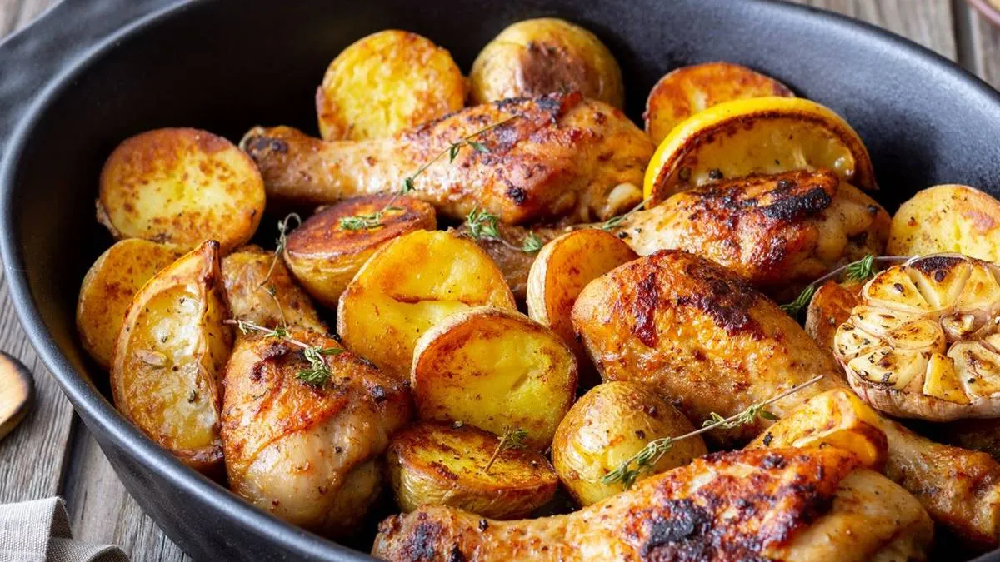

Paso a paso recetas
Receta de pollo

Ingredientes de la receta
- 4 presas de pollo (muslos o pechugas)
- 3 papas medianas
- 2 dientes de ajo
- 1 cucharada de paprika (pimentón en polvo)
- 1 cucharadita de orégano seco
- ½ cucharadita de comino
- 2 cucharadas de aceite de oliva
- Jugo de 1 limón
- Sal y pimienta al gusto
- Perejil fresco para decorar (opcional)
Paso a paso
- Preparar el pollo
Lava y seca las presas de pollo. Haz pequeños cortes superficiales para que absorban mejor los sabores.
- Marinar
En un tazón mezcla el ajo triturado, paprika, orégano, comino, aceite de oliva, jugo de limón, sal y pimienta. Unta bien las piezas de pollo con esta mezcla y déjalas reposar 15 minutos (si tienes más tiempo, mejor).
- Preparar las papas
Pela las papas y córtalas en rodajas o cubos medianos. Sazónalas con un poco de aceite, sal y pimienta.
- Hornear
En una bandeja para horno coloca las papas como base y encima el pollo marinado. Hornea a 180 °C durante 40–45 minutos, hasta que el pollo esté dorado y las papas suaves.
- Servir
Saca del horno, espolvorea perejil fresco y sirve caliente acompañado de una ensalada ligera.